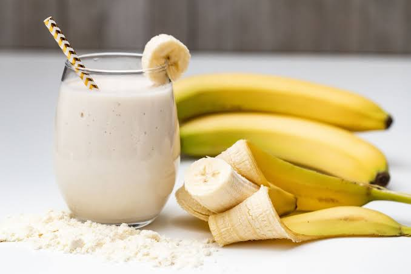
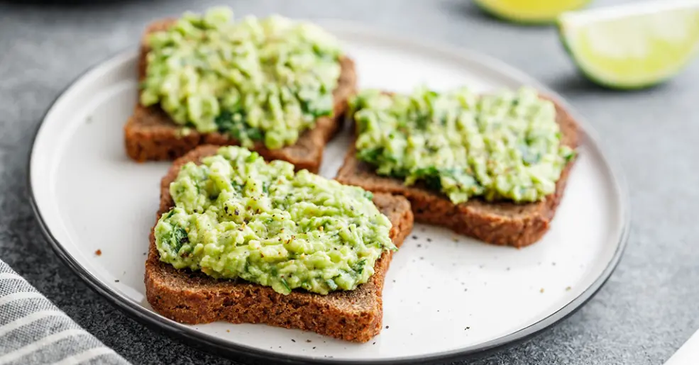

Omelete de Queijo
10 minIngredientes
- 2 ovos
- 2 fatias de queijo
- 1 pitada de sal
- 1 fio de azeite
Preparo
Bata os ovos com sal, despeje na frigideira com azeite, adicione o queijo e dobre ao meio.
Três receitas fáceis para começar bem o dia
Bata os ovos com sal, despeje na frigideira com azeite, adicione o queijo e dobre ao meio.

Bata todos os ingredientes no liquidificador por 1 minuto e sirva em seguida.

Torre o pão, amasse o abacate com limão, sal e pimenta e espalhe sobre as torradas.